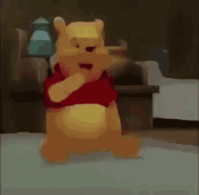

About me
Homepage
Visual Design
Digital Design
TBD
My name is Rosita Contreras. I am a sophmore at BECA and ive been here since middle school. I have six dogs, my dogs name is Leo and he's 4 turning 5.I have 3 sisters, my younger sister is a freshman at BECA.
My favorite bands right now are Chase Atlantic, The Arctic Monkeys, and The Neighborhood.
I like to read and be with my friends Karen, Alejandra, and Destiny🦖
